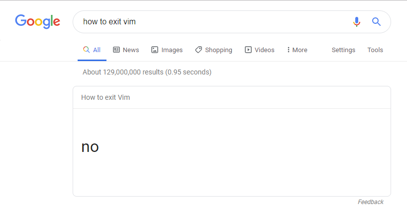

Rebuilding Junkyard: a mini-Datadog from scratch
I have a "working" log aggregator, a self-imposed conference deadline, and a job interview to prepare for. This is why I'm scrapping the first one and rebuilding the architecture into something better. Junkyard v1 was meant to be DIY solution duct-taped together in a panic to satisfy a need for a project for Epitech where we were given pitiful VMs with 2GB of RAM that could barely keep themselves turned on.
The deadline
On October 15, 2026, there's a Datadog Summit in Paris. I registered, and I asked to chat with a Datadog engineer, mentioning, perhaps optimistically, my Go observability project. When my M.Sc. at Epitech finishes in 2027, I want to land a junior Software Engineer role there.
The funny thing being that this isn't my first attempt at this. When I finished my first Master's (BAC +5) in software architecture through OpenClassrooms I also applied perhaps 5 times to Datadog for a CDI. I got 0 interviews out of that, cue the tiny violin music and dim the lights.
Datadog's interviews are not framework trivia, whatever that means exactly. Similarly to some FAANG companies, they most likely probe systems thinking: concurrency, backpressure, distributed-systems trade-offs, production-ready code. So the project can't just exist by October. It has to be the kind of thing you can defend line by line in a design discussion. Twelve weeks out, my current project is not that thing.
If you're a Datadog SWE and you're reading this, hello there stranger. If you aren't and you're reading this, please forward it to anyone you know at Datadog. I will be bound to you by honor for at least 3 years, I pinkie promise!
What Junkyard v1 actually is
Junkyard v1 is a lightweight log aggregator I built in Go: HTTP and syslog ingestion, a SQLite store (WAL mode, FTS5 full-text search), a query API, a web UI, and a CLI. It genuinely worked. It collected logs from multiple VMs into one searchable place. Though the networking changes I had to do to get to there were an absolute nightmare.
Safe to say it was rushed. Here is a fun little list:
- Logs only. No metrics, no traces, no OpenTelemetry anywhere, and OTLP is table stakes for anything calling itself observability tooling in 2026. Sadly I didn't know what that even was when I was writing Junkyard v1.
- No tests, no CI. Nothing more to say about that, which is itself the problem. Let's say speed of delivery was just too important!
- Not easily reproducible. Deployment is a bit of a nightmare. While my documentation detailed the intended steps, often I ran into problems on the network/infra side that required some real research to overcome. In theory, if your network is set up well enough it shouldn't be too complicated. Is it worth it for the functionality offered? Yeah, no. Not really.
-
My personal favorite: when things weren't working properly I would
SSH into the monitoring VM and try to make fixes in Vim to save time
by skipping going through Github.
That Vim session is open to this day.

The foundation is good, the SQLite log store design carries over,
but v1 demonstrates "I can build a thing for logs,"
not "I can reason about an ingestion pipeline under load." Though I
would like to say that due to some bad setup on our part, we were
indeed getting about 15,000 logs per day at some point. My
thing of an app only crapped out and died when the
logs ate up all the remaining storage space on the VM. So the plan for
now: rebuild, in "public", with a decision log. The v1 code stays in
git history under a v1.0.0 tag. The rebuild from scratch
is part of the story, not something to hide.
The target: a mini-Datadog
I understand how it reads, like I haven't been sleeping enough for a month and now I'm rambling. But Junkyard v2 is/will be/should be a personal observability platform, scoped to what one person can build well in twelve weeks:
- OTLP ingestion for all three signals (metrics, logs, and traces) over gRPC and HTTP.
- A storage layer with a deliberate retention and downsampling story, including a small custom time-series database. The point isn't to beat VictoriaMetrics, I don't have 8 years of time to produce an 8th of the functionality. The point is to be able to explain every trade-off I made, and ideally not suck too badly at Go.
- A query API and web UI: log search, trace waterfalls, metric charts.
-
Containerized, deployed on Kubernetes via a Helm chart.
helm installworks onkindfrom a clean clone. - An instrumented demo app generating realistic telemetry. I will probably host it under junkyard.mrandrej.com, we'll see!
- Datadog's free tier monitoring Junkyard itself: dogfooding, and a good conversation starter at the Summit.
The architecture
Two things to notice. First, it's a monolith: one binary runs receivers, pipeline, storage, and query API. Splitting this into microservices would add deployment complexity with zero learning benefit at this scale, is what I should say. The truth is I don't feel like frying my brain any more than required. The interesting concurrency lives inside the process, not between processes. Second, there are three different storage answers for the three signals. That's deliberate, for now. As I have very little clue what I'm doing I reserve the right to retcon anything I say and pretend it never happened.
The ingestion pipeline
Every request travels the same path:
receiver → normalize → [bounded channel] → batcher → single storage writer
The queue is a fixed-capacity Go channel per signal type, and that's
the entire queue. When it's full, the receiver doesn't block: it tells
the client to back off (RESOURCE_EXHAUSTED on gRPC,
503 + Retry-After on HTTP, per the OTLP
spec) and increments a dropped-batch metric. A slow disk can never
stall every connected client.
The batcher accumulates points until a size or time threshold, then hands one batch to a single writer goroutine per signal type. That serializes all writes, which turns SQLite's single-writer limitation from a problem you fight into a property you design around.
The queue is in-memory, so a crash loses whatever hasn't been flushed: seconds of data. A durable, Kafka-style ingest queue would close that window and is explicitly out of scope. For a demo platform, bounded memory and simple reasoning beat durability guarantees I don't need.
Storage: three signals, three answers
Metrics get a custom TSDB: the centerpiece, and the part most likely to teach me humility. An in-memory head block (series ID → append-only samples) behind a write-ahead log, flushed periodically into immutable segment files, with a background job downsampling raw data into 1-minute and 1-hour rollups:
data/
├── wal/ # replayed on startup
├── head/ # in-memory, recent window
└── segments/ # immutable flushed blocks
└── rollup/ # 1m → 1h downsamplingRetention becomes trivial: raw data lives 7 days, 1-minute rollups 30 days, 1-hour rollups a year, and "expiring data" is just deleting old segment directories. That property alone justifies immutable segments.
Logs and traces stay on SQLite. The v1 log store
already proved itself (WAL mode, FTS5). It gains
trace_id/span_id columns so logs and traces
can reference each other. Traces get a span-oriented schema where
fetching a whole trace is one indexed lookup.
Because they hide exactly what I'm trying to learn. A general-purpose TSDB for all three signals is a multi-month project, but metrics alone are the right target: uniform data model, append-heavy workload, and a rich downsampling story. Every simplification gets a paragraph in the repo's decision log. The naivety is deliberate and documented, which is what makes it defensible in an interview rather than merely naive. In theory.
The plan
Twelve weeks, five milestones, committed early and often: a visible three-month commit history is worth more than a polished weekend dump:
| Weeks (2026) | Milestone | Exit criteria |
|---|---|---|
| 1–2 · Jul 20–Aug 2 | Walking skeleton | OTLP logs in, query out, CI running tests, on GitHub from day one |
| 3–6 · Aug 3–30 | Metrics + traces | All three signals ingested, TSDB head/WAL/segments, rollup job |
| 7–9 · Aug 31–Sep 20 | Kubernetes |
helm install works on kind from a clean
clone
|
| 10–11 · Sep 21–Oct 4 | Polish | README + architecture diagram, Datadog dogfooding, screenshots |
| 12 · Oct 5–11 | Buffer | Public demo, write-up, breathe |
Hard deadline: Datadog Summit Paris, October 15. The project needs to exist and be presentable by then, which is exactly why week 12 is called "buffer" and not "victory lap".
The full architecture spec and decision log (both shorter than this
post, I promise) live in the repo at
docs/V2-ARCHITECTURE.md, and the milestones are tracked as GitHub issues. This blog runs in
parallel: each post will take one slice (the OTLP receiver, the WAL,
crash recovery, the Helm chart) and go deeper than a commit message
can.
Next up:
Writing a spec-compliant OTLP receiver without embedding the
OpenTelemetry Collector:
what partial_success actually means, and why
backpressure is a feature you design, not a bug you fix. A lesson I
paid for in advance.